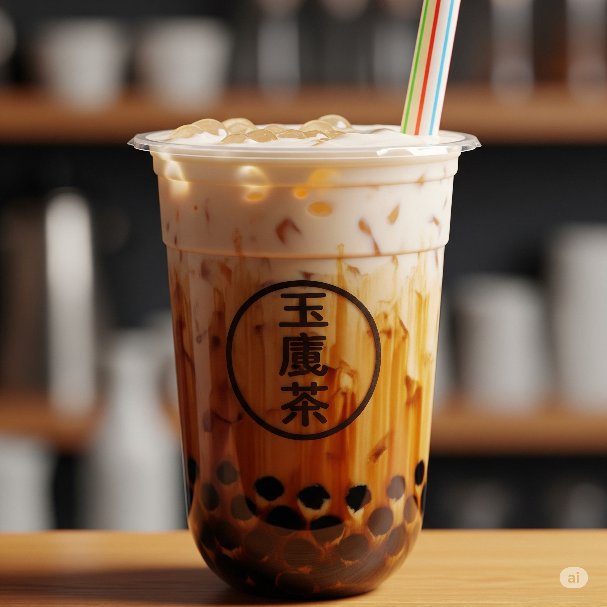

About
Taiwanese bubble tea, also known as boba tea or pearl milk tea, is a globally beloved beverage that originated in Taiwan in the 1980s. This iconic drink typically combines sweetened tea—black or green—with milk or fruit flavors, and is most famously known for its chewy tapioca pearls ("boba") that settle at the bottom of the cup. Served cold with a wide straw to accommodate the pearls, bubble tea has become a cultural phenomenon, spawning countless variations with different flavors, toppings, and textures. More than just a drink, Taiwanese bubble tea represents a fun and customizable experience, blending traditional tea culture with modern flair.